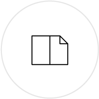

Showreel 2017
I'm passionate about usability and creative strategy, digital design and development. In my "spare time" I write about design and go for walks with my cat.
Branding: Logo design
and key visuals
UX/UI: Design & development
for web and mobile

Print design: Flyers,